Bothrops
The genus Bothrops (family Viperidae) has 49 species in SnakeList (all venomous), recorded in 22 countries.
- 49species
- 49venomous
- 22countries
Species
Showing 49 species
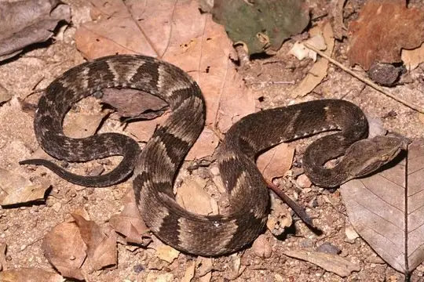
Alcatrazes LanceheadBothrops alcatraz Andean Forest-pitviperBothrops pulcher
Andean Forest-pitviperBothrops pulcher Barnett's LanceheadBothrops barnetti
Barnett's LanceheadBothrops barnetti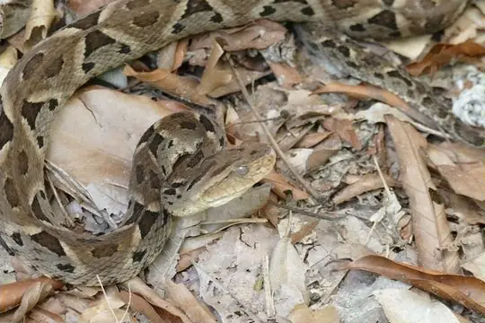
Bolivian LanceheadBothrops sanctaecrucis Brazil's LanceheadBothrops brazili
Brazil's LanceheadBothrops brazili Brazil's Lancehead (oligobalius)Bothrops oligobalius
Brazil's Lancehead (oligobalius)Bothrops oligobalius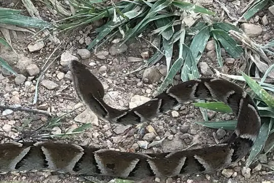
Brazilian LanceheadBothrops moojeni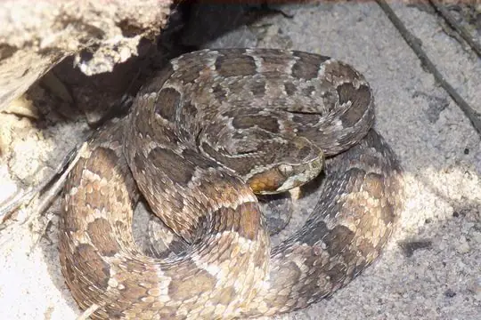
Caatinga LanceheadBothrops erythromelas- No photo yetCacicaBothrops ayerbei
- No photo yetCat LanceheadBothrops rhombeatus
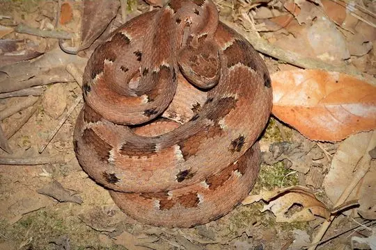
Cerrado Lancehead (pauloensis)Bothrops pauloensis Chocoan Forest Pit ViperBothrops punctatus
Chocoan Forest Pit ViperBothrops punctatus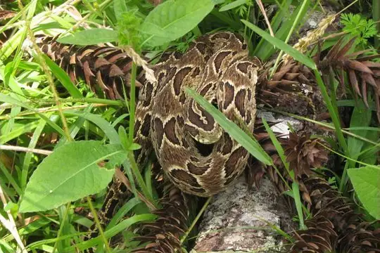
CotiaraBothrops cotiara Desert LanceheadBothrops pictus
Desert LanceheadBothrops pictus Fer-de-lanceBothrops asper
Fer-de-lanceBothrops asper Fer-de-LanceBothrops atrox
Fer-de-LanceBothrops atrox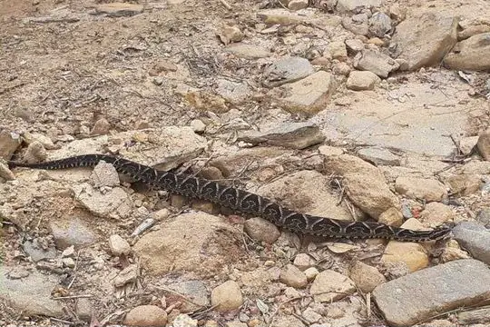
Fonseca's LanceheadBothrops fonsecai- No photo yetFranceses island-LanceheadBothrops sazimai
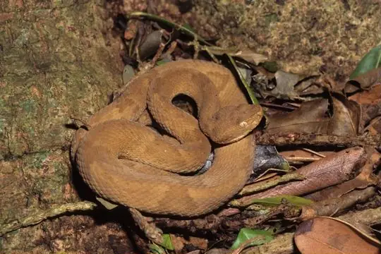
Golden LanceheadBothrops insularis Green JararacaBothrops bilineatus
Green JararacaBothrops bilineatus Inca Forest Pit Viper (chloromelas)Bothrops chloromelas
Inca Forest Pit Viper (chloromelas)Bothrops chloromelas Inca Forest Pit Viper (oligolepis)Bothrops oligolepis
Inca Forest Pit Viper (oligolepis)Bothrops oligolepis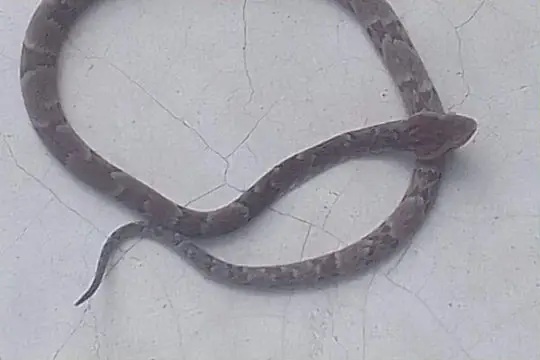
Jabre’s LanceheadBothrops jabrensis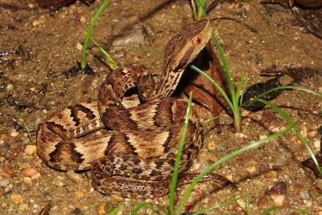
JararacaBothrops jararaca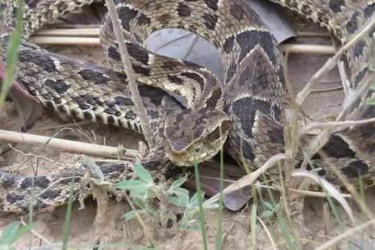
Jararaca PintadaBothrops neuwiedi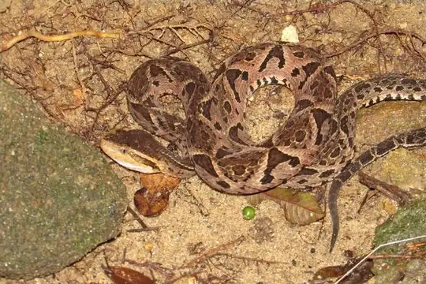
JararacussuBothrops jararacussu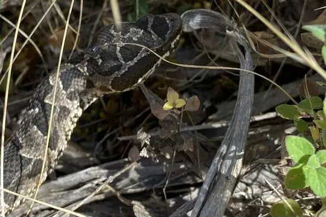
Jonathan's LanceheadBothrops jonathani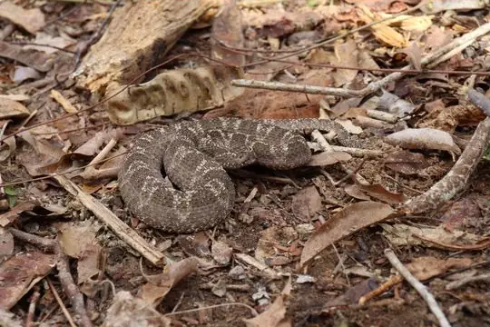
Lutz's Cerrado LanceheadBothrops lutzi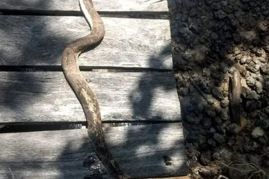
Marajó LanceheadBothrops marajoensis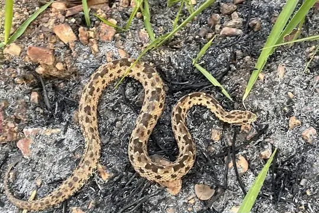
Marbled LanceheadBothrops marmoratus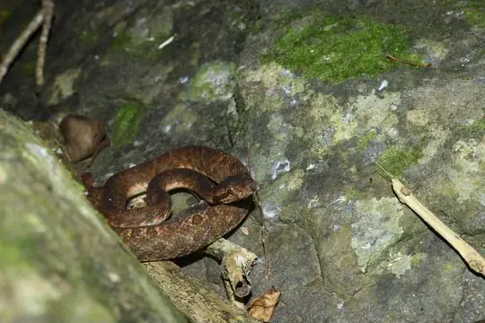
Martinique LanceheadBothrops lanceolatus Mato Grosso LanceheadBothrops mattogrossensis
Mato Grosso LanceheadBothrops mattogrossensis- No photo yetMoela’s lanceheadBothrops germanoi
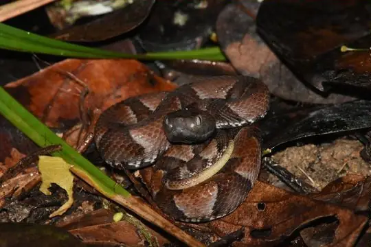
Murici LanceheadBothrops muriciensis Osborne's LanceheadBothrops osbornei
Osborne's LanceheadBothrops osbornei Painted LanceheadBothrops diporus
Painted LanceheadBothrops diporus Pampas LanceheadBothrops pubescens
Pampas LanceheadBothrops pubescens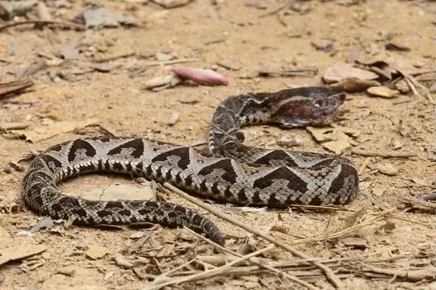
Piraja's LanceheadBothrops pirajai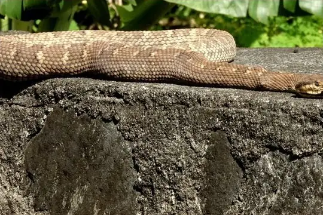
Saint Lucia ViperBothrops caribbaeus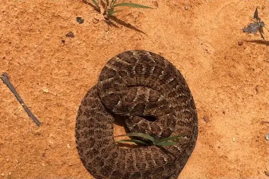
Sao Paulo LanceheadBothrops itapetiningae Speckled Forest Pit ViperBothrops taeniatus
Speckled Forest Pit ViperBothrops taeniatus UrutuBothrops alternatus
UrutuBothrops alternatus- No photo yetVenezuela Forest Pit ViperBothrops medusa
 Venezuela LanceheadBothrops venezuelensis
Venezuela LanceheadBothrops venezuelensis- No photo yetVitória's LanceheadBothrops otavioi
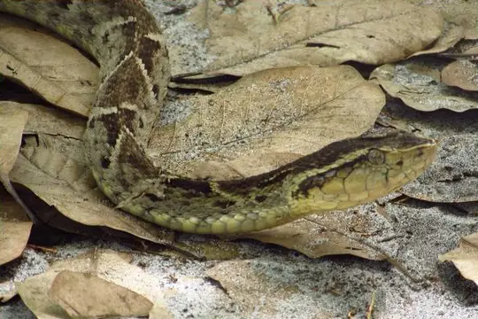
Whitetail LanceheadBothrops leucurus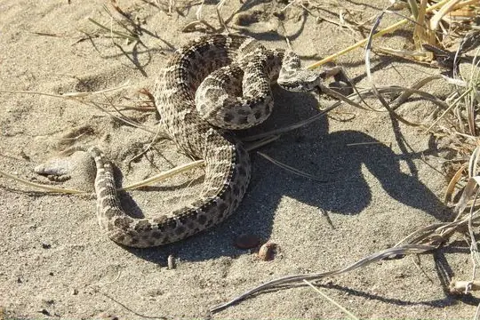
YararanataBothrops ammodytoides Bothrops monsignifer
Bothrops monsignifer- No photo yetBothrops sonene
No snakes in Bothrops match.